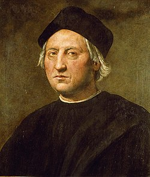
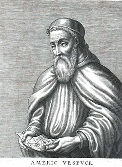

A változások kényszere és lehetősége Európában
A 15. században Európa lakossága növekedett, gazdasága gyors ütemben fejlődött. A növekvő forgalom nagy
mennyiségben igényelte a pénzt, amelyet nemesfémekből vertek.
DE Európa nem képes kielégíteni a nemesfémigényt aranyéhség. Okai:
- a távolsági kereskedelem közvetítőkön (pl. Velence, arab) keresztül zajlott drága volt
- a levantei kereskedelem költségeit tovább növelték a terjeszkedő Oszmán Birodalom által megemelt adók
- a nemesfém kiáramlott Európából, főleg a Távol-Keletről behozott luxuscikkekért cserébe
- az európai nemesfémbányák kimerültek pl. magyar, cseh bányák
- tehát külső nemesfémforrást kell keresni.
A 15. sz. végére a földrajzi felfedezésekhez szükséges technikai feltételek is adottak voltak.
- ismét elterjedt az a nézet, hogy a Föld gömb alakú ezt tükrözte Toscanelli térképe
- új hajótípus jelent meg: a karavella (jól kormányozható, magas oldalfalú, nagy vitorlafelületű)
- tájékozódást segítő eszközök is megjelentek pl. iránytű; fejlődtek a hajózási ismeretek
A portugál felfedezések
15. sz. közepétől indítottak felfedezőutakat a portugálok Afrika partjai mentén az arany és a fűszerek megszerzéséért.
- Bartolomeu Diaz elérte a Jóreménység fokát, vagyis Afrika legdélebbi pontját (1487)
- Vasco da Gama megkerülte Afrikát és eljutott Indiába (1498)
A portugálok kereskedelmi telepeket hoztak létre Indiában pl. Goa, később Kínában is pl. Macao
Emberek akik nevéhez fűződik
>
Cristoforo Colombo
vagy magyarosított nevén Kolumbusz Kristóf (olaszul: Cristoforo Colombo, portugálul: Cristóvão Colombo, spanyolul: Cristóbal Colón; Genova, Genovai Köztársaság, 1451. augusztus 25. és október 31. között – Valladolid, Kasztíliai Királyság, 1506. május 20.) itáliai származású, a portugál, majd a spanyol korona szolgálatában állt utazó, tengerésztiszt, az amerikai kontinens 1492-es felfedezője.
Bár az első, Amerika földjére lépő európaiak a 10. századi viking hajósok voltak – feltehetően Leif Eriksson, esetleg Bjarni Herjólfsson és harcosaik –, de művelődéstörténeti szempontból Kolumbusz felfedezése vezetett a korabeli világkép dinamikus kitágulásához, annak nyomán indult meg az amerikai kontinens feltérképezése és kolonizálása.

Amerigo Vespucci
Amerigo Vespucci (Firenze, 1454. március 9. – Sevilla, 1512. február 22.) olasz utazó, felfedező és térképész. 1499-ben a spanyol Alonso de Ojeda vezette expedíció navigátoraként részt vett Kolumbusz Kristóf második útján és az 1507-ben megjelent Négy utazás című beszámolójában „Újvilágnak” (Mundus Novus) nevezte a felfedezett új földrészt. 1507-től kezdve Vespucci keresztneve után Amerikának kezdték nevezni az új kontinenst. Martin Waldseemüller német térképrajzoló 1507-ben kiadott világtérképén már külön ábrázolta az Újvilágot, annak déli részére pedig az „America” feliratot nyomtatta. A névadást Vespucci latinizált keresztneve ihlette nőnemű alakban, ugyanis a többi, akkor ismert kontinens neve (Europa, Asia, Africa), szintén nőnemű volt.
